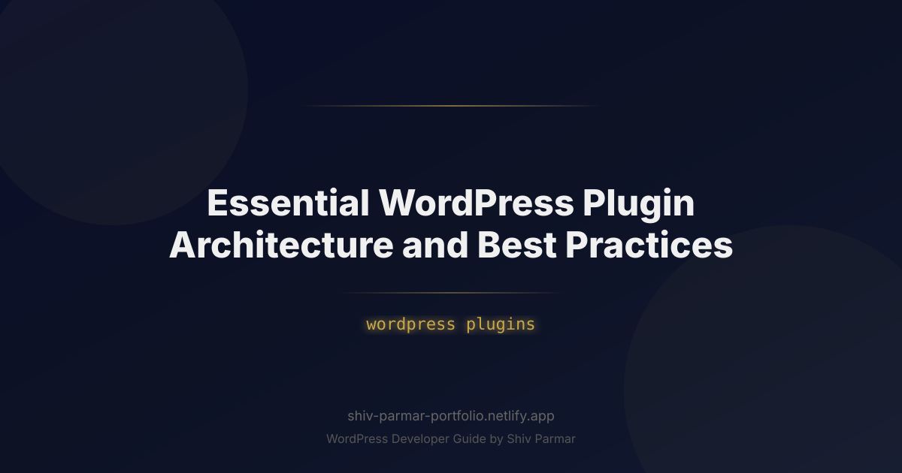

Essential WordPress Plugin Architecture and Best Practices
Table of Contents
Building high-performing, maintainable wordpress plugins requires moving far beyond basic PHP scripting. With WordPress powering over 43% of the web, the ecosystem has evolved from a simple blogging framework into an enterprise-level content management platform. Developing for this ecosystem demands robust software design patterns, modern PHP standards, and an uncompromising focus on security and performance.
Whether you are building custom solutions for enterprise clients or creating commercial products for thousands of active installs, adopting a clean plugin architecture is essential. Poorly structured code leads to memory leaks, security vulnerabilities, script conflicts, and high maintenance costs. Conversely, a well-architected plugin ensures your code is testable, extensible, and capable of scaling seamlessly as site traffic grows.
In this definitive WordPress guide, we will break down modern architecture patterns, examine the foundational principles of clean plugin design, step through the process of building a enterprise-grade plugin boilerplate, and explore crucial best practices for security and performance in 2026 and beyond.
What is WordPress Plugin Architecture?
At its core, plugin architecture refers to the structural organization of code, design patterns, file hierarchies, and data flows within a WordPress extension. It defines how a plugin initializes, handles dependencies, interacts with the core database, registers hooks, and presents interfaces to both admin users and front-end visitors.
Historically, early wordpress plugins relied on single procedural PHP files packed with global function definitions and inline HTML. Modern plugin architecture, however, relies on Object-Oriented Programming (OOP), SOLID design principles, PSR-4 autoloading standards, and decoupled architecture separating business logic from view templates.
The foundation of all plugin execution relies on an event-driven architecture powered by the WordPress Hook system: Actions (which allow you to execute custom code at specific execution points) and Filters (which allow you to modify data before it is processed or saved). A well-designed architecture decouples these hooks from core execution logic, ensuring that classes remain modular and testable.
| Architectural Pattern | Procedural Architecture | Modern OOP Architecture |
|---|---|---|
| Code Organization | Flat files, global functions, inline logic | Namespaced classes, PSR-4 autoloading, single responsibility files |
| Dependency Management | Manual require_once calls across files |
Composer-managed dependencies and dynamic class loading |
| Testability | Extremely difficult to unit test due to global state | Highly testable using Dependency Injection and Mocking |
| Conflict Risk | High risk of function/variable naming collisions | Zero collisions due to PHP namespaces |
| Extensibility | Monolithic files, hard to alter behavior | Modular hook subscribers, custom APIs, abstract classes |
Why Plugin Architecture Matters in 2026
The web ecosystem has reached a level of complexity where outdated development practices quickly lead to technical debt, slow Core Web Vitals, and severe security liabilities. Modern PHP (8.2+) introduces strict typing, enums, read-only classes, and enhanced performance capabilities that should be leveraged within WordPress development environments.
There are four distinct pillars that make architectural design critical today:
First, Performance and Resource Management are top priorities for site owners focused on Core Web Vitals (INP, LCP, CLS). Poorly constructed plugins load CSS and JavaScript assets globally across every page view, instantiate memory-heavy objects prematurely, and execute unoptimized SQL queries on every request. Clean architecture defers asset loading until necessary, leverages object caching, and implements lazy loading patterns.
Second, Maintainability and Technical Debt Reduction dictate the long-term cost of software. Software projects often outlive their original developers. Utilizing standard patterns like Model-View-Controller (MVC) or Action-Domain-Responder (ADR) alongside self-documenting code means team members can refactor, extend, or fix bugs without rewriting entire modules.
Third, Integration with Modern Front-End Frameworks requires robust APIs. As the WordPress Block Editor (Gutenberg) and headless configurations (using React, Vue, or Next.js) become standard, plugin backends must act as secure, fast API endpoints. Proper architecture isolates the REST API layer from internal application logic, allowing front-end interfaces to query data cleanly.
Finally, Security Resilience is non-negotiable. Modern architectural standards minimize attack surfaces by design—implementing automated sanitization pipelines, centralized nonce verification, and strict capability checks within controller classes rather than sprinkling checks randomly across template files.
Step-by-Step Guide to Building a Scalable WordPress Plugin
Follow this step-by-step WordPress guide to design a scalable, enterprise-grade plugin using modern software engineering patterns.
1. Setting Up the Project & Directory Structure
A clean folder structure keeps your code organized by domain responsibility. Avoid flat directory structures. Instead, segregate assets, core PHP logic, templates, and vendor libraries into dedicated directories.
Here is an ideal directory tree for a modern plugin:
my-advanced-plugin/
├── assets/
│ ├── build/
│ └── src/
│ ��── js/
│ └── css/
├── includes/
│ ├── Abstract/
│ ├── Admin/
│ ├── API/
│ ├── Database/
│ ├── Frontend/
│ └── Interfaces/
├── languages/
├── templates/
├── vendor/
├── .gitignore
├── composer.json
├── my-advanced-plugin.php
├── README.txt
└── uninstall.php
The root file, my-advanced-plugin.php, acts strictly as the entry point (the bootstrapper). It must contain the standard WordPress plugin header and set up constants before delegating execution to an initialization engine.
<?php
/**
* Plugin Name: Advanced Modular Plugin
* Plugin URI: https://example.com/plugins/advanced-modular-plugin
* Description: An enterprise-grade, scalable plugin utilizing OOP principles.
* Version: 1.0.0
* Requires at least: 6.4
* Requires PHP: 8.1
* Author: Your Name
* Text Domain: advanced-modular-plugin
* Domain Path: /languages
*/
if (!defined('ABSPATH')) {
exit; // Exit if accessed directly.
}
// Define Plugin Constants
define('AMP_VERSION', '1.0.0');
define('AMP_PLUGIN_DIR', plugin_dir_path(__FILE__));
define('AMP_PLUGIN_URL', plugin_dir_url(__FILE__));
define('AMP_PLUGIN_FILE', __FILE__);
// Load Composer Autoloader
if (file_exists(AMP_PLUGIN_DIR . 'vendor/autoload.php')) {
require_once AMP_PLUGIN_DIR . 'vendor/autoload.php';
}
// Boot the plugin
add_action('plugins_loaded', function() {
\MyPlugin\Core\Init::get_instance()->register_services();
});
2. Implementing PSR-4 Autoloading and Namespaces
Relying on multiple require_once calls across files is slow and prone to human error. Instead, leverage PSR-4 autoloading via Composer to automatically load classes when they are instantiated.
Create a composer.json file in your plugin root directory to map your PHP namespace to the includes/ folder:
{
"name": "vendor/advanced-modular-plugin",
"description": "Enterprise WordPress Plugin",
"type": "wordpress-plugin",
"license": "GPL-2.0-or-later",
"autoload": {
"psr-4": {
"MyPlugin\\": "includes/"
}
},
"config": {
"optimize-autoloader": true,
"sort-packages": true
}
}
After creating this file, run composer dump-autoload in your terminal. Now, any class created in includes/Admin/Settings.php with the namespace MyPlugin\Admin will autoload automatically without manual inclusions.
3. Managing Hooks with a Dependency Injector / Service Registrar Pattern
A frequent anti-pattern in wordpress plugins is binding hooks directly inside class constructors. Doing so makes testing difficult and instantiates hooks prematurely. Instead, implement a centralized Init or Service Registrar system that registers hooks separately.
First, define a contract interface for all services using an ServiceInterface.php file:
<?php
namespace MyPlugin\Interfaces;
interface RegisterableInterface {
/**
* Register hooks, actions, and filters.
*/
public function register(): void;
}
Now, implement this interface inside core functional services, such as an Admin Controller:
<?php
namespace MyPlugin\Admin;
use MyPlugin\Interfaces\RegisterableInterface;
class AdminMenu implements RegisterableInterface {
public function register(): void {
add_action('admin_menu', [$this, 'add_menu_pages']);
add_action('admin_enqueue_scripts', [$this, 'enqueue_assets']);
}
public function add_menu_pages(): void {
add_menu_page(
__('Advanced Plugin', 'advanced-modular-plugin'),
__('Advanced Plugin', 'advanced-modular-plugin'),
'manage_options',
'advanced-modular-plugin',
[$this, 'render_admin_view'],
'dashicons-admin-generic',
30
);
}
public function enqueue_assets(string $hook_suffix): void {
if ($hook_suffix !== 'toplevel_page_advanced-modular-plugin') {
return;
}
wp_enqueue_style(
'amp-admin-styles',
AMP_PLUGIN_URL . 'assets/build/css/admin.css',
[],
AMP_VERSION
);
}
public function render_admin_view(): void {
include_once AMP_PLUGIN_DIR . 'templates/admin-dashboard.php';
}
}
Next, build the central Init container that automatically instantiates registered services:
<?php
namespace MyPlugin\Core;
use MyPlugin\Interfaces\RegisterableInterface;
use MyPlugin\Admin\AdminMenu;
use MyPlugin\API\RestController;
final class Init {
private static ?Init $instance = null;
public static function get_instance(): Init {
if (null === self::$instance) {
self::$instance = new self();
}
return self::$instance;
}
/**
* Return list of all services to initialize.
*/
private function get_services(): array {
return [
AdminMenu::class,
RestController::class,
];
}
/**
* Instantiate services and call their register method.
*/
public function register_services(): void {
foreach ($this->get_services() as $class) {
$service = new $class();
if ($service instanceof RegisterableInterface) {
$service->register();
}
}
}
}
4. Interfacing with the Database (Custom Tables vs Meta APIs)
Understanding when to use Custom Post Types (CPTs) versus custom database tables is critical for performance scalability. Custom Post Types and postmeta are fantastic for unstructured or content-heavy entities, but storing high-frequency relational data inside wp_postmeta causes massive database inflation.
When custom tables are necessary, isolate database interaction behind dedicated Data Access Objects (DAO) or repository classes, and use dbDelta() for schema creation upon activation.
<?php
namespace MyPlugin\Database;
class Schema {
public static function create_tables(): void {
global $wpdb;
$table_name = $wpdb->prefix . 'amp_custom_logs';
$charset_collate = $wpdb->get_charset_collate();
$sql = "CREATE TABLE $table_name (
id bigint(20) NOT NULL AUTO_INCREMENT,
user_id bigint(20) NOT NULL,
action varchar(100) NOT NULL,
created_at datetime DEFAULT CURRENT_TIMESTAMP NOT NULL,
PRIMARY KEY (id),
KEY user_id (user_id)
) $charset_collate;";
require_once(ABSPATH . 'wp-admin/includes/upgrade.php');
dbDelta($sql);
add_option('amp_db_version', '1.0.0');
}
}
To safely invoke schema setup upon activation, hook your method into a dedicated activation file in the plugin root:
register_activation_hook(AMP_PLUGIN_FILE, ['\\MyPlugin\\Database\\Schema', 'create_tables']);
5. Building Enterprise REST API Endpoints
Modern wordpress plugins frequently serve custom endpoints for Gutenberg blocks or React/Vue applications. Custom REST routes must inherit from WP_REST_Controller to ensure consistent schema handling, standard error handling, and authorization control.
<?php
namespace MyPlugin\API;
use MyPlugin\Interfaces\RegisterableInterface;
use WP_REST_Controller;
use WP_REST_Server;
use WP_REST_Request;
use WP_REST_Response;
use WP_Error;
class RestController extends WP_REST_Controller implements RegisterableInterface {
protected $namespace = 'amp/v1';
protected $rest_base = '/data/';
public function register(): void {
add_action('rest_api_init', [$this, 'register_routes']);
}
public function register_routes(): void {
register_rest_route($this->namespace, $this->rest_base, [
[
'methods' => WP_REST_Server::READABLE,
'callback' => [$this, 'get_items'],
'permission_callback' => [$this, 'get_items_permissions_check'],
],
[
'methods' => WP_REST_Server::CREATABLE,
'callback' => [$this, 'create_item'],
'permission_callback' => [$this, 'create_item_permissions_check'],
'args' => $this->get_endpoint_args_for_item_schema(WP_REST_Server::CREATABLE),
],
]);
}
public function get_items_permissions_check($request): bool {
return current_user_can('read');
}
public function create_item_permissions_check($request): bool {
return current_user_can('edit_posts');
}
public function get_items($request): WP_REST_Response {
$data = ['status' => 'success', 'payload' => ['item1', 'item2']];
return rest_ensure_response($data);
}
public function create_item($request): WP_REST_Response|WP_Error {
$param = $request->get_param('title');
if (empty($param)) {
return new WP_Error('missing_param', __('Title is required', 'advanced-modular-plugin'), ['status' => 400]);
}
return rest_ensure_response(['id' => 101, 'title' => sanitize_text_field($param)]);
}
}
6. Enqueuing Scripts and Styles Conditionally
One of the biggest issues impacting WordPress front-end speed is plugin resource bloat. Assets should never load indiscriminately on every site URL. Ensure scripts and styles are conditionally loaded only where needed.
<?php
namespace MyPlugin\Frontend;
use MyPlugin\Interfaces\RegisterableInterface;
class Assets implements RegisterableInterface {
public function register(): void {
add_action('wp_enqueue_scripts', [$this, 'enqueue_frontend_assets']);
}
public function enqueue_frontend_assets(): void {
// Only load script on single posts containing our custom shortcode or post type
if (!is_singular('post')) {
return;
}
wp_enqueue_style(
'amp-frontend-style',
AMP_PLUGIN_URL . 'assets/build/css/frontend.css',
[],
AMP_VERSION
);
wp_enqueue_script(
'amp-frontend-script',
AMP_PLUGIN_URL . 'assets/build/js/frontend.js',
['jquery'],
AMP_VERSION,
true // Load in footer
);
// Pass localized data to JavaScript securely
wp_localize_script('amp-frontend-script', 'ampSettings', [
'ajaxUrl' => admin_url('admin-ajax.php'),
'nonce' => wp_create_nonce('amp_frontend_nonce'),
]);
}
}
Best Practices for Modern WordPress Plugin Development
Writing functional code is only half the battle; maintaining security, speed, and standard compliance across millions of execution environments demands strict adherence to software engineering standard practices.
1. Defense in Depth: Input Sanitization and Data Escaping
Never trust input data, whether it comes from form submissions, URL parameters, external API payloads, or even database queries. Always sanitize inputs upon arrival and escape outputs immediately before rendering.
- Sanitization (Inputs): Clean raw user input using helper functions like
sanitize_text_field(),sanitize_email(), orabsint()prior to database operations. - Escaping (Outputs): Late-escape all variables right at the output point using context-aware helpers like
esc_html(),esc_attr(),esc_url(), orwp_kses_post().
| Data Context | Sanitization Function (Input) | Escaping Function (Output) |
|---|---|---|
| Plain Text | sanitize_text_field( $input ) |
esc_html( $var ) |
| HTML Attributes | sanitize_text_field( $input ) |
esc_attr( $var ) |
| URLs | esc_url_raw( $input ) |
esc_url( $var ) |
| Rich HTML Content | wp_kses_post( $input ) |
wp_kses_post( $var ) |
| Integer IDs | absint( $input ) |
intval( $var ) or absint() |
2. Security & Form Nonces
Every form post request or AJAX invocation must be protected by standard nonces (numbers used once) to prevent Cross-Site Request Forgery (CSRF) attacks, alongside user capability verification.
<?php
namespace MyPlugin\Admin;
class FormHandler {
public function handle_admin_submission(): void {
// 1. Verify Request Method
if ($_SERVER['REQUEST_METHOD'] !== 'POST') {
return;
}
// 2. Check Nonce Validity
if (!isset($_POST['amp_nonce']) || !wp_verify_nonce($_POST['amp_nonce'], 'amp_save_settings_action')) {
wp_die(__('Invalid security token provided.', 'advanced-modular-plugin'), 403);
}
// 3. Verify User Permissions
if (!current_user_can('manage_options')) {
wp_die(__('Unauthorized action.', 'advanced-modular-plugin'), 403);
}
// 4. Sanitize and Process Data
$setting_value = sanitize_text_field($_POST['amp_setting_field'] ?? '');
update_option('amp_setting_key', $setting_value);
// 5. Redirect Safely
wp_safe_redirect(add_query_arg('status', 'success', wp_get_referer()));
exit;
}
}
3. High-Performance Caching Layer
Avoid expensive recalculations or repetitive SQL calls on high-traffic sites by leveraging the WordPress Object Cache and Transients API. Transients store temporary cached data inside the options table (or external in-memory stores like Redis/Memcached when configured).
<?php
namespace MyPlugin\Services;
class DynamicDataProvider {
public function get_expensive_remote_data(): array {
$cache_key = 'amp_remote_api_payload';
$cached_data = get_transient($cache_key);
if (false !== $cached_data) {
return $cached_data;
}
// Fetch fresh data if cache missed
$response = wp_remote_get('https://api.example.com/v1/resource');
if (is_wp_error($response) || wp_remote_retrieve_response_code($response) !== 200) {
return [];
}
$data = json_decode(wp_remote_retrieve_body($response), true);
// Cache result for 4 hours (14400 seconds)
set_transient($cache_key, $data, 4 * HOUR_IN_SECONDS);
return $data;
}
}
4. Database Optimization and Uninstallation Cleanup
When a user removes your plugin, your code should leave no orphaned records behind. Use an uninstall.php file to guarantee clean removal. Do not execute cleanup operations inside a deactivation hook, as users frequently deactivate plugins temporarily to debug conflicts.
Create an uninstall.php file in the plugin root:
<?php
// If uninstall not called from WordPress, exit.
if (!defined('WP_UNINSTALL_PLUGIN')) {
exit;
}
global $wpdb;
// Delete custom plugin options
delete_option('amp_db_version');
delete_option('amp_setting_key');
// Delete transients
delete_transient('amp_remote_api_payload');
// Drop custom tables
$table_name = $wpdb->prefix . 'amp_custom_logs';
$wpdb->query("DROP TABLE IF EXISTS {$table_name}");
Common Mistakes to Avoid
Even seasoned software engineers coming from other PHP frameworks (Laravel, Symfony) fall into common traps when building extensions for WordPress. Keep these pitfalls in mind:
1. Polluting the Global Namespace
Declaring global functions like function init() or global variables like $database creates high risks of critical site crashes due to name collisions with core or other plugins. Always enclose your code inside distinct namespaces (e.g., namespace MyCompany\MyPlugin;) or wrap functions inside class structures.
2. Direct Execution of Heavy Code in Constructors
Instantiating database connections, invoking network APIs, or registering heavy filters inside a class __construct() method destroys control flow flexibility. Constructors should only be used to set up instance dependencies. Move logic execution into explicit methods called by hook callbacks.
3. Hardcoding File Paths and Database Names
Never hardcode paths like wp-content/plugins/my-plugin/ or table names like wp_posts into your source code. Enterprise installations often change dynamic folder locations or alter table prefixes for security reasons. Always utilize core constants and dynamic helpers:
- Use
plugin_dir_path( __FILE__ )andplugin_dir_url( __FILE__ )for filesystem path locations. - Use
$wpdb->prefix . 'table_name'to query plugin database tables dynamically.
4. Ignoring Coding Standards and Automated Testing
Writing inconsistent PHP makes collaborative development difficult. Modern development workflows require static analysis tools to maintain clean code standards across teams. Integrate these essential tools into your continuous integration (CI) workflow:
- PHPCS (PHP CodeSniffer): Configured with the official
WordPress-Coding-Standardsruleset to catch improper formatting, missing late escaping, or prohibited functions. - PHPStan / Psalm: Static code analyzers customized for WordPress (e.g., via
szepeviktor/phpstan-wordpress) to identify type bugs, undefined functions, or dead execution branches prior to deployment. - PHPUnit: Performs automated unit tests against mocked core objects and database calls to maintain reliability across releases.
5. Failing to Internationalize Strings
Failing to prepare user-facing strings for localization blocks global deployment. Wrap every human-readable string in proper internationalization (i18n) translation wrapper functions:
// Incorrect:
echo "Settings updated successfully.";
// Correct:
echo esc_html__( 'Settings updated successfully.', 'advanced-modular-plugin' );
Conclusion
Developing custom wordpress plugins requires a solid grasp of architecture, security standards, and object-oriented design principles. As outlined in this WordPress guide, adhering to established best practices—such as namespace isolation, proper input sanitization, and the efficient use of action and filter hooks—ensures that your code remains scalable, maintainable, and fully compatible with future platform updates. Building clean, high-performing extensions not only enhances site functionality but also safeguards user data and optimizes overall site speed.
While mastering these architectural foundations is essential for long-term project success, translating complex functional requirements into seamless, production-ready code can be technically demanding. Enterprise-level custom features, third-party API integrations, and database optimizations often require deep platform expertise to execute effectively without compromising site stability or performance.
If you are looking for a reliable technical partner to bring your software vision to life, Shiv Parmar is available for WordPress development work worldwide. From bespoke plugin architecture to comprehensive code audits and custom integrations, Shiv delivers tailored, secure, and scalable solutions for businesses of all sizes. Reach out today to discuss your project requirements and elevate your web application.